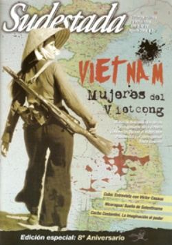

Buscar
Contra los molinos de viento
Edición N° 81
Agosto 2009
Revista bimensual
Comprar edición impresaSumario
- Vietnam. Mujeres del Vietcong
- Contra los molinos de viento
- Cacho Costantini: La imaginación al papel
- Víctor Casaus: "La esperanza nos ofrece sus destellos"
- Sueño de Solentiname
- Villa Constitución, 1975. Memoria del fuego
Compartir Articulo
Podríamos enumerar una veintena de razones por las cuales elegimos poner el cuerpo y la vida en nuestra querida revista Sudestada, pero, para ser justos, no alcanzaría. Puede parecer exagerado, pero crean que no. Han pasado 8 años desde aquella primera edición -tan desprolija como desafiante- y, sin embargo, la pasión es prácticamente la misma. El porqué de este fuego interior nunca se podría traducir en palabras. Algunos pensarán que parte de nuestro secreto de continuidad se debe a que las historias que abordamos nos apasionan hasta enceguecernos. Puede ser. Otros supondrán que la clave es la amistad que une a quienes integramos las filas de Sudestada desde adentro, o el diálogo permanente con nuestros lectores, que de manera conciente o no son parte de esa esencia. Los que pronosticaban nuestro fracaso años atrás casi no aparecen por Lomas; se escondieron tras sus muros de mufa, cansados de toparse en los kioscos con las "tapitas" de la revista.
A ellos vamos a dedicarle en esta ocasión un brindis con mucha agua, para que sepan que todavía queda mucha tela para cortar. Pero también están nuestros aliados, los que nos llenan de fuerza para que nuestras espaldas carguen en cada repartija la pasión de seguir adelante. También nos acaricia el alma la amistad de los escritores, músicos y artistas amigos que siempre prestaron la oreja para nuestras inquietudes y supieron guiar el camino con sus palabras y melodías.
En estas 81 ediciones no nos privamos de nada. Supimos reírnos de nuestras limitaciones y excesos con el gran Aramis Rigatuso (hoy una leyenda), personaje de culto que se fugó de la redacción para evitar el incendio de las relaciones personales. Cometimos todos los errores ortográficos posibles. Descubrimos la pasión del jazz junto a Oscar Alemán y del chamamé con el Chango Spasiuk, nos metimos en la cotidianeidad de cientos de historias de vida de militantes para entender su entrega y explicar este presente. Nos topamos con nuestras limitaciones creativas a cada rato, pero luchamos para superarnos y seguir aportando nuestra mirada. Batallamos contra los amantes de lo establecido, contra los evangelistas de la verdad revelada y desorientamos a más de uno con nuestras temáticas de tapa. Se enojaron intelectuales de renombre al compartir un espacio en estas páginas con personajes populares como Pocho La Pantera o el "Ancho" Peucelle. Festejamos en cada agradecimiento la derrota o victoria de nuestros amores futbolísticos y logramos que esa mini sección sea una de las primeras en ser leídas por nuestros lectores. En fin, somos concientes de que este carnaval de emociones pasa una vez en la vida y hay que hacer lo que se pueda para que la murga siga sonando.
Generalmente uno mira para atrás con la idea de darse ánimo, de repensar las buenas y las malas, de no cometer los errores del pasado, porque hay que seguir adelante y lo que más nos importa hoy es el horizonte de lo que se viene, de todo lo mucho que sigue pendiente. Por eso, compañeros de este viaje, hasta las 100 ediciones no paramos, y después correremos la línea un poco más adelante para seguir haciendo crecer este proyecto que, como ustedes sabrán, excede desde hace tiempo a quienes hablamos desde esta humilde y apasionada tribuna.
Aquí estamos, con la adarga bajo el brazo y nuestras lanzas de punta contra los molinos de viento. Ahí vamos, sintiendo bajo nuestros talones el costillar de Rocinante, al galope, de regreso al camino que elegimos.
Dos, tres muchos Vietnam
Durante demasiado tiempo, cualquier mirada sobre la guerra de Vietnam estuvo contaminada en occidente por la visión del coloso vencido. El imperio, a través del cine y la televisión, transmitió su versión de aquel turbio episodio: aun desde una perspectiva crítica del papel de Estados Unidos en aquella criminal invasión, nunca fue posible conocer a ciencia cierta las vivencias de los propios vietnamitas. Para el cine yanqui, siempre eran fantasmas ausentes, enemigos que se confundían con la jungla y explotaban las debilidades de la estrategia militar de Washington. Pero Vietnam no ganó su "guerra americana" sólo por la impericia de Estados Unidos: en la primera línea del frente, estaba un pueblo unido, fusionado con un proyecto de país libre y unificado, que pagó un precio altísimo (quizá como ningún otro) por la afrenta de defender con una dignidad única su derecho a la libertad. Enfrente estaba el aparato militar más grande del mundo, pero no pudo doblegar a los hombres y mujeres del Vietcong.
Esta edición aniversario de Sudestada es, también, un mínimo homenaje a ese pueblo, a esa gesta y a esa cultura que nunca pudimos conocer debidamente por la fortaleza del dispositivo ideológico del gran derrotado en aquella guerra que cambió la historia para siempre.
Comentarios

Sudestada
El colectivo de Revista Sudestada esta integrado por Ignacio Portela, Hugo Montero, Walter Marini, Leandro Albani, Martín Latorraca, Pablo Fernández y Repo Bandini.
Articulos más vistos


LIBRERÍA SUDESTADA

Colección infantil

Distribuidora de Libros

Suscripción

Sudestada en URUGUAY

Otros articulos de esta edición
 Nota de tapa
Nota de tapa
Vietnam. Mujeres del Vietcong
Tran Thi Gung apunta con su fusil en mitad de una emboscada. Dang Thuy Tram es doctora en un hospital ...
 Dossier
Dossier
Villa Constitución, 1975. Memoria del fuego
El 20 de marzo de 1975, el gobierno de Isabel Perón lanzó una feroz represión contra los obreros metalúrgicos en ...
 Nuestra América
Nuestra América
Sueño de Solentiname
Un fantasma recorre el archipiélago de Solentiname... Es el fantasma inasible del general Augusto César Sandino, que desde hace décadas ...
 Papeles amarillos
Papeles amarillos
Cacho Costantini: La imaginación al papel
De la narrativa al teatro, pasando por la poesía y el ensayo con mirada militante, la vasta obra de Humberto ...
 Entrevista
Entrevista
Víctor Casaus: "La esperanza nos ofrece sus destellos"
Es poeta, cineasta, periodista: Víctor Casaus, uno de los principales referentes intelectuales de Cuba y director del Centro Cultural Pablo ...